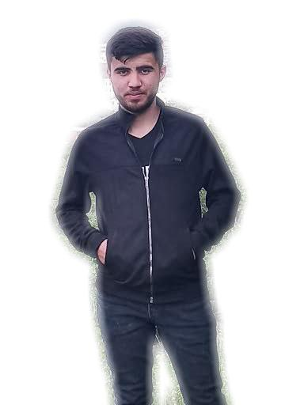
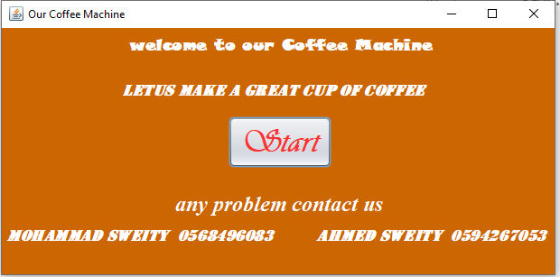
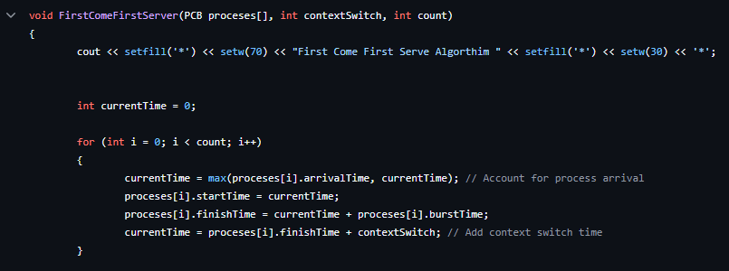
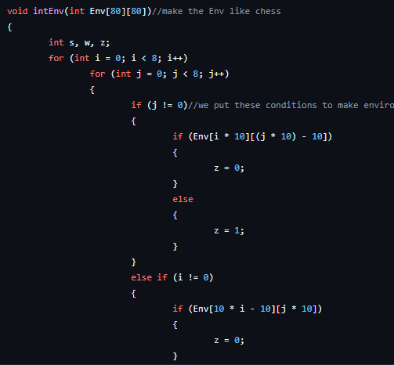

Welcome to my Personal Blog website,A little bit About me

Hello and welcome to Blog page, My name is mohammad Omar Sweiti,and
I'm thrilled to start sharing my thoughts, experiences, and insights
here. I’m passionate about technology, learning new skills, and
exploring different areas of life.
This blog will be a place for me to document my journey, whether it’s
about my recent projects, new skills I’m learning, or tips I pick up
along the way. Thank you for joining me on this adventure!
Published on November 1, 2024
How I Built My First Project: A coffe machine

Me and my friend Ahmed Sweiti, Designed and developed a Java
Application to simulate a machine that make a coffee by applying the
concepts of Object-oriented programming in the code and using Java
Swing for designing simple user interface
Made the application as the project of Object-Oriented Programming
course
Published on may 2023
My Journey Learning Front-End Development
I recently started learning front-end development through Udacity,
and it's been an exciting journey. From understanding HTML and CSS
to starting with JavaScript, I'm amazed at how much creativity and
technical skill front-end development involves.
also i started a full stack web development learing with sada
company in my universtiy , so both give me what i need in front end
Development
Published on November 2024
A Smart Agriculture System
For my first big project, I decided to create a smart agriculture
system using IoT components and cloud technology. I used sensors to
measure soil moisture, temperature, and light levels, and then
connected it to an Azure IoT Hub to collect data in real-time.
It was a challenging project but very rewarding. I learned so much
about cloud computing, data analysis, and how IoT can make farming
more efficient. In this post, I'll share my process, challenges, and
what I learned.
Published on Oct 2024
CPU scheduling algorithms project

Designed and developed a C++ program to simulate the CPU when
executing the processes. Implemented the first come first serve,
shortest job first and shortest remaining job first
Made the application as the project of operating system course
Published on may 2024
Particle filter implementation project using C++

Designed and developed a C++ Application to simulate the movement of
a robot and determining its location . Made the application as the
project of intelligence system course.
Used Git to version control the project and hosted on GitHub.
Published on dec 2023